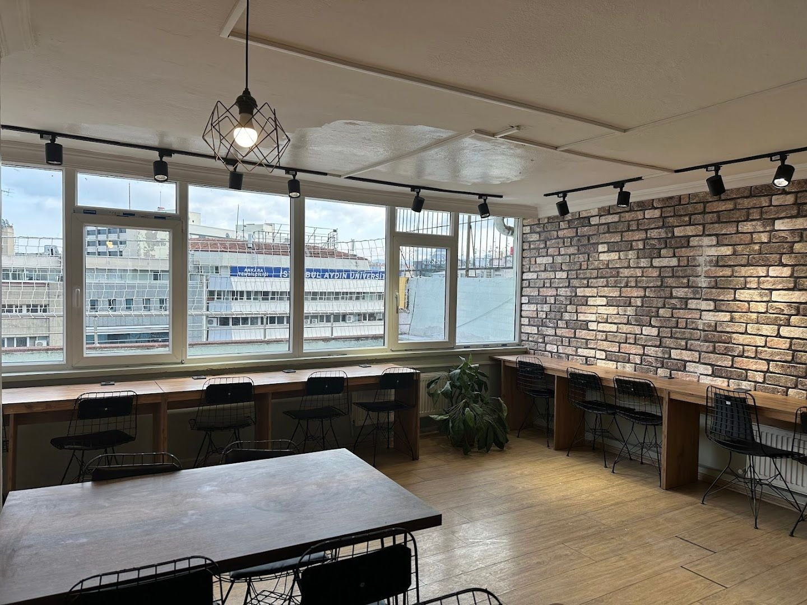
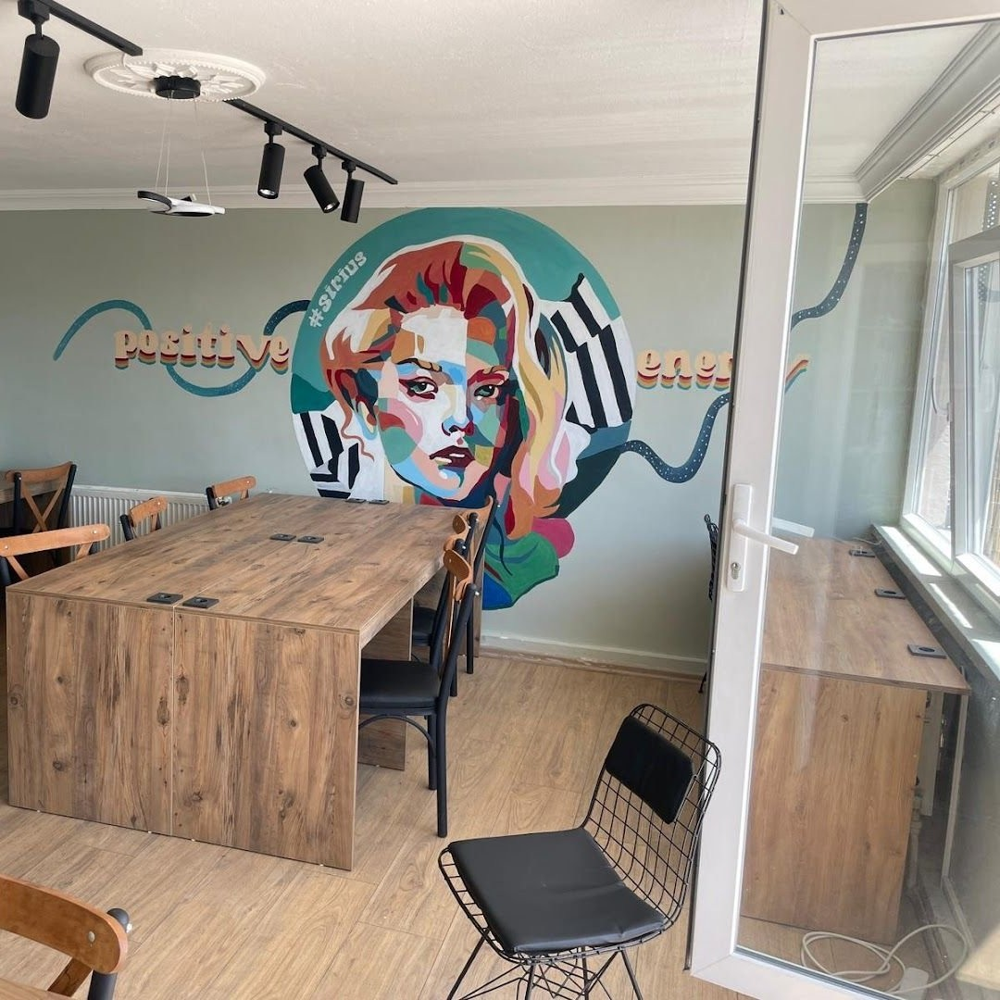

Sirius Kafe; Kızılay'ın tam ortasında sizi bekleyen sessiz çalışma alanı, kitap kulübü ve sıcak kafe deneyimi.

Kızılay merkezinde balkon manzaralı, sessiz çalışma alanı ve sıcak kafe deneyimi bir arada.
Sirius Kafe, Kızılay'ın kalbinde 10. katta; şehrin gürültüsünden uzak, kitabınızla ya da notlarınızla saatlerce vakit geçirebileceğiniz bir alan. Güzel bir manzara, sıcak bir çay ve sessizlik — hepsini aynı anda bulabilirsiniz.
Kütüphane rahatında, kafe sıcaklığında.
Google Puanı
Gerçek Yorum
Her Gün Açık
Sessiz çalışma alanı, balkon manzarası, Speaking Club ve Kitap Kulübü ile Kızılay'ın en sıcak kitap kafe deneyimi.
Konsantrasyonu artıran sakin atmosfer, priz ve şarj imkânı, yalnız ya da grup çalışmasına uygun esnek oturma düzeni.
Kızılay'ın 10. katında şehrin üzerinde açık bir balkon; çayınızı içerken Ankara'yı tepeden izleyin.
Her Cuma 19:00'da düzenlenen Speaking Club etkinliğiyle İngilizce konuşma pratiği yapın, yeni insanlarla tanışın.
Okuma grupları, kitap tartışmaları ve kültürel etkinliklerle Sirius topluluğunun bir parçası olun.

Sirius Kafe, Kızılay'ın gürültüsünden arındırılmış 10. kattaki sakin ortamıyla konsantrasyonunuzu destekler. Uzun süre rahat oturabileceğiniz alanlar, priz ve şarj noktaları, ücretsiz Wi-Fi — hepsi düşünüldü.
Yalnız çalışmak isteyenler için sessiz köşeler, grup projesi için sosyal masalar ve bir mola vermek isteyenler için balkon — Sirius Kafe, merkezi konumuyla Kızılay'ın en işlevsel çalışma durağı.
199'dan fazla Google yorumunda öne çıkan temalar: sakin atmosfer, sıcak ekip ve balkon manzarası.
"Ders çalışmak için Ankara'nın en iyi adresi. 10. kattaki sessiz ortam ve balkon manzarası inanılmaz. Haftada birkaç kez geliyorum."
"Speaking Club etkinliği harika, ekip çok sıcak. Cuma akşamları burası benim için zorunlu durak."
"Kitap okumak, kahve içmek ve şehrin üstünden manzara izlemek — Sirius Kafe'de bunların hepsi bir arada."
Kitaplık, balkon, çalışma köşeleri ve sıcak kafe ortamı — Sirius Kafe'nin farklı yüzleri.
Kızılay’ın tam merkezinde, Atatürk Bulvarı üzerinde 10. katta. Ulaşmak kolay, ayrılmak zor.
Atatürk Blv Alemdar İş Hanı No:88, 10. Kat / 20-19
06530 Kızılay – Çankaya / Ankara
Rezervasyon, etkinlik veya menü hakkında bilgi almak için bize WhatsApp, Instagram veya telefon üzerinden ulaşabilirsiniz.